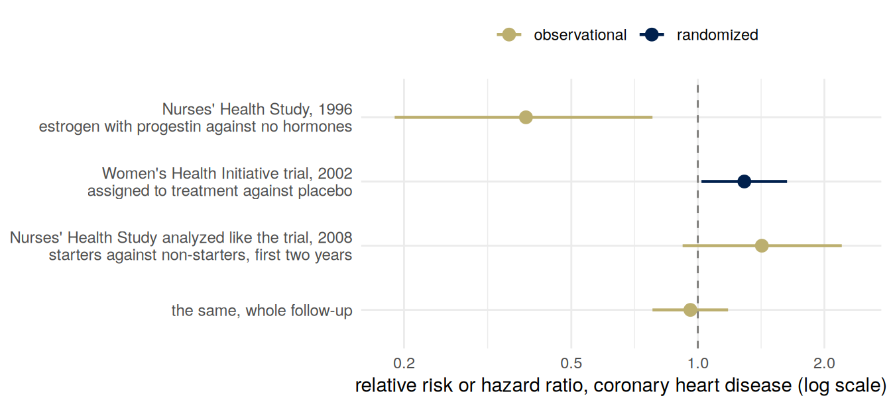
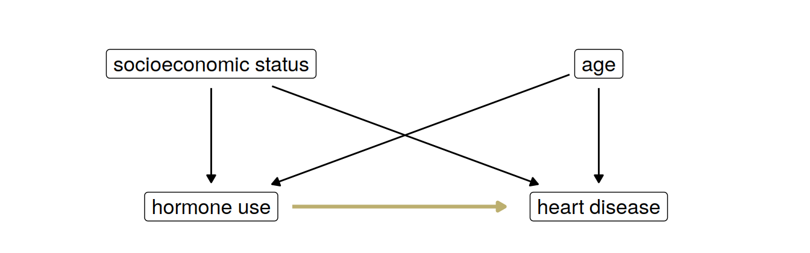
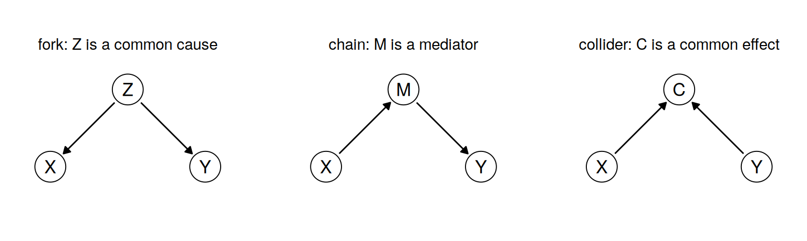
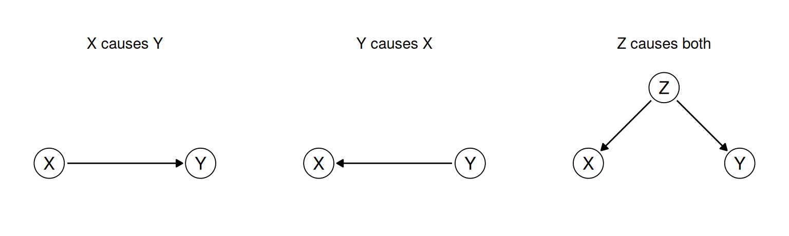
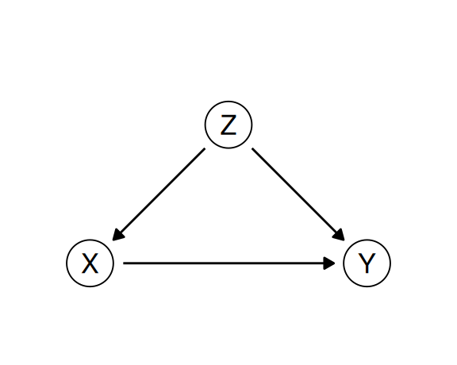
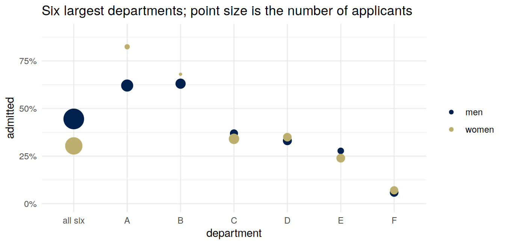
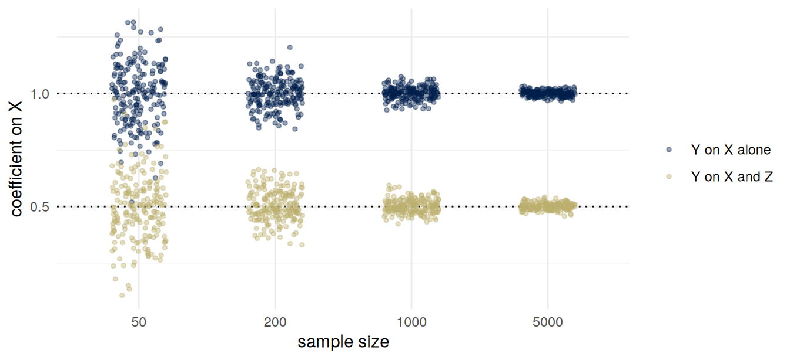
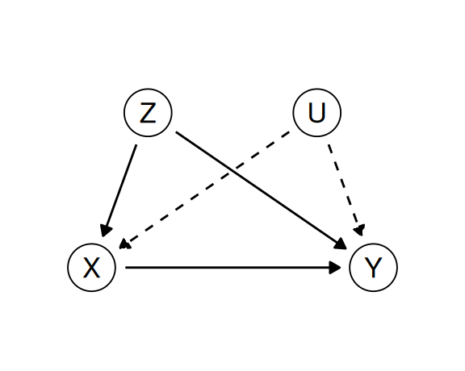
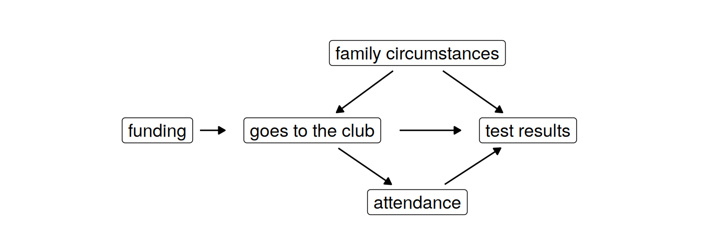

Consequences and causal models
Important note: consequentialism, deontology, virtue ethics and pragmatic ethics are four ways of judging whether an action is right. Of these, ms4ds describes the first three, and says that they “are not mutually exclusive or exhaustive, so we do not have to choose one of them or limit our thinking to using only these ideas.” Where I write “I”, the view is mine. You are not expected to share it, and a well-argued position I think is wrong can still get full marks.
Summary
A consequentialist judges an action by what it brings about. To say what an action brings about, you have to compare what would happen if it were taken with what would happen if it were not. That is a causal claim. Data show what happened to the people who took the action, which answers a different question. Large observational studies found less heart disease among women who took hormone therapy after the menopause, and a randomized trial then found more.
A causal model writes down which variables affect which, and comes with a rule for working out what an intervention would do. With a model in hand, an observed difference can sometimes be turned into an estimate of an effect, by adjusting for the right variables. Which variables are the right ones depends on the model. You cannot read the model off the data, so you have to choose one and defend it.
Four ways to judge an action
Consequentialism, deontology and virtue ethics are in ms4ds, section 3.2, and all four are in the Wikipedia articles on consequentialism, deontology, virtue ethics and pragmatic ethics.
Consequentialism judges an action by its effects. Its best-known form is utilitarianism: choose the action that does the greatest good for the greatest number of people. ms4ds lists its difficulties: defining utility, trading off one person’s good against another’s, deciding whether to judge single acts or general rules, and “uncertainty about predicting consequences. The last issue, predicting consequences, is one where the intersection with data science is particularly relevant.”
Deontology judges an action by whether it follows a rule or a duty, “rather than based on the consequences of the action,” in Wikipedia’s words. An action can be right though its consequences are bad, if it kept to the rule. Provided you know which rules you have a duty to follow, you may not need to predict consequences at all, which makes deontology simpler to apply. If a rule can never be overridden, though, you may be bound to it when following it leads somewhere terrible. Kant is the best-known deontologist.
Virtue ethics judges character. In Wikipedia’s words, it “prioritizes the development of moral character and dispositions (good habits).” A person acting honestly or courageously can be acting well even when a rule was broken and the outcome was bad. Virtues can conflict, and people do not agree on which traits are virtues.
Pragmatic ethics treats moral norms the way a scientist treats a hypothesis. A scientist can accept a hypothesis and work with it as if it were true, while expecting later work to refine or replace it. Ethical pragmatists think that “norms, principles, and moral criteria are likely to be improved as a result of inquiry.” They hold that it can be appropriate to work within any of the other three frameworks, while leaving room to move beyond it. One image for this is Neurath’s boat, which likens the gradual change of ethical norms to sailors rebuilding their ship while at sea. One criticism is that pragmatic ethics describes how people do make moral judgments rather than how they should.
I have argued for a pragmatism about models, statistical and causal (Loftus 2024): “Instead of asking if a model is right, correct, or accurate, we should ask if it is useful for a certain purpose.” In the same paper I borrow a distinction from Tukey (1960), one of this week’s optional readings. Conclusions should be final and well tested, so it makes sense to hold them to high standards of evidence. Decisions are temporary. We make them so that we can act, and we expect that we may need to try something else. You can decide to use a causal model without taking the model as conclusive.
The Belmont and Menlo principles
From 1932 the United States Public Health Service ran a study in which African American men in Alabama were recruited with the promise of free health care. Most of them had syphilis. They were never told that they had it, or that they were not being treated, and they were kept from penicillin after it was known to be an effective treatment. ms4ds, section 3.3, tells the story of the Tuskegee study. It ended in 1972, after a whistleblower came forward and newspapers took up the story. Prompted in part by it, the National Research Act of 1974 created a national commission for the protection of research subjects. The commission’s report, released in 1978, is the Belmont Report, named after the conference center in Elkridge, Maryland, where part of it was drafted. It sets out three principles: respect for persons, beneficence and justice. In 2012 the Menlo Report, from the US Department of Homeland Security, adapted them for cybersecurity research and added a fourth. Together they are the Belmont–Menlo principles, here in the Menlo Report’s wording, which ms4ds quotes:
- Respect for persons: “Participation as a research subject is voluntary, and follows from informed consent; Treat individuals as autonomous agents and respect their right to determine their own best interests; …”
- Beneficence: “Do not harm; Maximize probable benefits and minimize probable harms; Systematically assess both risk of harm and benefit.”
- Justice: “Each person deserves equal consideration in how to be treated, and the benefits of research should be fairly distributed …; Selection of subjects should be fair, and burdens should be allocated equitably across impacted subjects.”
- Respect for law and the public interest: “Engage in legal due diligence; Be transparent in methods and results; Be accountable for actions.”
Applied ethics does not pick one of the four frameworks. Respect for persons reads like a deontological rule, and beneficence like a consequentialist one. To maximize probable benefits you have to predict what a study, or a product, will do to the people it touches.
The consequentialist’s problem
Wikipedia states the consequentialist position like this: an act is right “if and only if the act (or in some views, the rule under which it falls) will produce, will probably produce, or is intended to produce, a greater balance of good over evil than any available alternative.” That is a comparison between actions. Only one of them is taken, so at most one of the outcomes is ever seen. The others are what would have happened, and a claim about what would have happened is a causal claim. A consequentialist cannot state their own position on an action without a causal model, because the consequences of an action are its causal effects. In ms4ds, section 3.4: “Causal understanding is necessary to apply consequentialism. An observational model of the world does not tell us what consequences we can expect to result from any action which is an intervention.”
Barocas, Hardt and Narayanan open their chapter on causality, on the page before this week’s reading starts, with a pair of questions. The first is “Do 16 year-old drivers have a higher incidence rate of traffic accidents than 18 year-old drivers?” That is a difference between two conditional probabilities, and a large enough sample answers it. The second is “Would traffic fatalities decrease if we raised the legal driving age by two years?” It asks for “the effect of a hypothetical action,” and the same sample does not answer it. Older drivers also have more driving experience. The authors add that 18-year-olds who started driving late may be unusually cautious, or live where people need a car less.
How often do researchers move from what happened to what should be done? Prasad, Jorgenson, Ioannidis and Cifu (2013) read the 631 original articles published in 2010 in four leading medical journals, and found 298 eligible observational studies. In 167 of the 298 (56%), the authors recommended a medical practice on the strength of their results. Only 24 of those 167 said that a randomized trial should be done first.
Hormone therapy and heart disease
In 1996 the Nurses’ Health Study reported on 59,337 women followed for up to 16 years. Women who took estrogen with progestin after the menopause, compared with women who did not use hormones, had “a marked decrease in the risk of major coronary heart disease”: a relative risk of 0.39 (95% confidence interval 0.19 to 0.78), adjusted for the confounding variables the authors measured. They concluded that adding progestin “does not appear to attenuate the cardioprotective effects of postmenopausal estrogen therapy.” A protective effect is a claim about what taking the hormones does.
The Women’s Health Initiative tested the claim. It randomized 16,608 women aged 50 to 79, all with a uterus, to estrogen with progestin or to a placebo, and it was stopped early, after a mean of 5.2 years, because of an excess of invasive breast cancer and an overall balance of risks over benefits. For coronary heart disease the hazard ratio was 1.29, with a nominal 95% interval of 1.02 to 1.63; in absolute terms, about 7 more cases per 10,000 person-years. Nominal means that the interval was computed as if this were the only outcome and the only analysis, though the trial tracked many outcomes and was analyzed repeatedly as it ran. Its conclusion was about action: the regimen “should not be initiated or continued for primary prevention” of coronary heart disease.
Two explanations were offered, and both can be true. One is confounding: the women who chose hormones differed from the women who did not, in ways that also affect the heart. This week’s reading uses the case as its example of confounding: “a suspected beneficial effect of hormone replacement therapy in reducing cardiovascular disease disappeared after identifying socioeconomic status as a confounding variable.” The review it cites (Humphrey, Chan and Sox 2002) pooled earlier studies. Among those that had adjusted for socioeconomic status and the major risk factors for coronary disease, the summary relative risk of coronary disease with any hormone use was 1.07 (credible interval 0.79 to 1.48).

The gold arrow is the claim that the hormones protect the heart. The four black arrows can produce a difference between users and non-users without it.
The other explanation is the comparison itself. Hernán and colleagues (2008) went back to the Nurses’ Health Study and analyzed it the way the trial was analyzed: women who started estrogen with progestin against women who did not start, both followed from the same point. Over the first two years the hazard ratio was 1.42 (0.92 to 2.20), and over the whole follow-up 0.96 (0.78 to 1.18), estimates they describe as “similar to those from the Women’s Health Initiative.” The differences that remained, they suggest, “could be largely explained by differences in the distribution of time since menopause and length of follow-up.”
The same cohort gave 0.39 under one comparison, and between 0.96 and 1.42 under another, analyzed differently. A doctor deciding whether a patient should start hormones is choosing an action. The comparison that matches it is women who started against women who did not, from the same day. Women who took hormones against women who did not is a comparison of two groups of people, and it answers a question about them.
Causal models
The reading builds a model as a program. A structural causal model is “a sequence of assignments for generating a joint distribution starting from independent noise variables.” Each variable is assigned as a function of some of the variables before it, its parents, and of its own noise. The causal graph has a node for each variable and an arrow into it from each of its parents. Three shapes come up over and over. The letters are the ones this course uses.

In a fork, \(Z\) has arrows to both \(X\) and \(Y\): it is a common cause. In a chain, \(X \to M \to Y\), the mediator \(M\) is one of the routes by which \(X\) affects \(Y\). In a collider, \(X\) and \(Y\) both have arrows into \(C\): it is a common effect. A common cause is the usual source of confounding.
Conditioning and intervening
Take the reading’s first program. Whether a person exercises, \(X\), is a coin toss with probability \(1/2\). Without exercise, a person becomes overweight (\(W = 1\)) with probability \(1/3\) and develops heart disease (\(H = 1\)) with probability \(1/3\), independently. Exercise prevents both: \[ X := U_1, \qquad W := \begin{cases} 0 & X = 1 \\ U_2 & X = 0 \end{cases}, \qquad H := \begin{cases} 0 & X = 1 \\ U_3 & X = 0 \end{cases}, \] with \(U_1 \sim B(1/2)\) and \(U_2, U_3 \sim B(1/3)\) independent, where \(B(1/3)\) is 1 with probability \(1/3\) and 0 otherwise. The graph is a fork, \(W \leftarrow X \to H\).
The probability of heart disease is \(P(H = 1) = P(X = 0)\,P(U_3 = 1) = \tfrac12 \cdot \tfrac13 = \tfrac16\). Now observe that someone is overweight. That happens only without exercise, so \(X = 0\), and \[ P(H = 1 \mid W = 1) = \tfrac13 . \] Overweight people have twice the rate of heart disease of the population as a whole, \(1/3\) against \(1/6\). Would a program that changed people’s weight change their heart disease? Changing weight is an action on \(W\). In the program it means replacing the line that assigns \(W\) by a constant, \(W := 1\) or \(W := 0\), and leaving every other line alone. Do that, and \(H\) still depends only on \(X\) and \(U_3\): \[ P(H = 1 \mid do(W := 1)) = \tfrac16 = P(H = 1 \mid do(W := 0)). \] Setting the weight does nothing to the heart. Observing the weight told you about the exercise, and the exercise is what affects the heart.
The reading’s second program reverses one arrow: weight drives exercise, \(W \to X \to H\). Overweight people exercise with probability \(1/2\) and nobody else does. There, conditioning on \(W = 1\) and setting \(W := 1\) both give \(1/6\), so the two can agree. Whether they do depends on the graph.
\(P(Y \mid X = x)\) describes the people for whom \(X\) happened to be \(x\). \(P(Y \mid do(X := x))\) describes what would happen if \(X\) were set to \(x\) for everyone, which in the graph means deleting every arrow into \(X\) and fixing its value. The reading’s definition: “We say that \(X\) and \(Y\) are confounded when the causal effect of action \(X := x\) on \(Y\) does not coincide with the corresponding conditional probability.”
The average treatment effect
For a binary \(X\), the average treatment effect is \[ \text{ATE} = E[Y \mid do(X := 1)] - E[Y \mid do(X := 0)], \] the difference in the mean of \(Y\) between a world where everyone is treated and one where nobody is. “Causal effects are population quantities,” as the reading says. The effect on one person, or on one group, can differ from it. “This policy causes better outcomes” is a statement about a quantity like this one. The observed difference \(E[Y \mid X = 1] - E[Y \mid X = 0]\) is a statement about who happened to be treated.
Prediction and intervention
Figure 1 of my 2024 paper has three graphs, redrawn here.

Its caption ends: “It is possible that the accuracy of some function \(f(X)\) in predicting \(Y\) is equal in all cases.” A policy that changes \(X\) in order to change \(Y\) works only in the first. Under the other two, setting \(X\) leaves \(Y\) alone; to change \(Y\) you would act on \(Y\) or on its causes, which in the third include \(Z\). “If we expect a model to also tell us what happens when we intervene on variables, then these models with equal predictive accuracy are no longer equivalent. We become responsible to choose one of them.”
Confounding and adjustment
Say you want to argue that a job-search course for people out of work should be expanded, because the people who took it were more often in work six months later. In a version with numbers chosen to work by hand, a thousand people are registered with a job center, which refers some of them to the course. It refers people who worked in the previous year more readily, because it judges them ready. In this version everyone referred attends and nobody else does, so referral and attendance are the same. Write \(Z = 1\) for worked in the previous year, \(X = 1\) for attended the course, and \(Y = 1\) for in work six months later.
| attended (\(X = 1\)) | did not attend (\(X = 0\)) | |
|---|---|---|
| worked last year (\(Z = 1\)), 500 people | 400, of whom 280 in work (70%) | 100, of whom 60 in work (60%) |
| did not (\(Z = 0\)), 500 people | 100, of whom 40 in work (40%) | 400, of whom 120 in work (30%) |
| total, 1,000 people | 500, of whom 320 in work (64%) | 500, of whom 180 in work (36%) |
Of the people who attended, 64% are in work, against 36% of those who did not. A press release would say the course raises employment by 28 percentage points. Now read the rows. Among people who worked last year, 70% of attenders are in work against 60% of the others. Among people who did not, 40% against 30%. Within each row the difference is 10 points.
The numbers came from this graph:

\(Z\) pushes people onto the course: 80% of those who worked last year attend, against 20% of the others. \(Z\) also makes people more employable, whether or not they attend. Attenders are in work more often partly because of the course and partly because of who was sent. The 28 points mixes the two.
The adjustment formula
Intervening on \(X\) deletes the arrow \(Z \to X\). Everyone attends, or nobody does, and \(Z\) keeps the distribution it had. So the mean outcome under \(do(X := 1)\) is the within-row rate for attenders, averaged over the rows with weights given by how common each row is: \[ \begin{aligned} E[Y \mid do(X := 1)] &= \sum_z E[Y \mid X = 1, Z = z]\, P(Z = z) \\ &= 0.7 \times 0.5 + 0.4 \times 0.5 = 0.55 . \end{aligned} \] Likewise \(E[Y \mid do(X := 0)] = 0.6 \times 0.5 + 0.3 \times 0.5 = 0.45\), and the average treatment effect is \(0.10\). In general, \[ \boxed{\;P(Y = y \mid do(X := x)) = \sum_z P(Y = y \mid X = x, Z = z)\, P(Z = z)\;} \] when \(Z\) satisfies the backdoor criterion below, and every value of \(Z\) that occurs includes some people with \(X = x\) (otherwise \(P(Y = y \mid X = x, Z = z)\) is not defined). This is the adjustment formula. The reading writes it with the parents of \(X\) in place of \(Z\), and calls computing it “controlling for” a set of variables: estimate the effect “separately in every slice of the population defined by a condition \(Z = z\),” then average the slices, each weighted by its share of the population.
The observed comparison weights the rows differently. It weights each row by its share of the people who attended, or of the people who did not: \[ \begin{aligned} P(Y = 1 \mid X = 1) &= \frac{0.7 \times 400 + 0.4 \times 100}{500} = 0.64, \\ P(Y = 1 \mid X = 0) &= \frac{0.6 \times 100 + 0.3 \times 400}{500} = 0.36 . \end{aligned} \] The attenders come mostly from the \(Z = 1\) row and the others mostly from the \(Z = 0\) row, and the two rows have different rates of being in work whatever people do. The extra 18 points come from the referral policy sending to the course the people who would more often find work anyway.
Randomization
Suppose the center had referred people at random, half of each row, and as before everyone referred had attended. Then attenders would come half from each row, and so would the others. The shares in work to expect are \[ \begin{aligned} P(Y = 1 \mid X = 1) &= 0.5 \times 0.7 + 0.5 \times 0.4 = 0.55, \\ P(Y = 1 \mid X = 0) &= 0.5 \times 0.6 + 0.5 \times 0.3 = 0.45 . \end{aligned} \] The observed difference is now the effect, apart from the chance variation of one random draw. Randomizing deletes the arrow into \(X\) in the world itself, so the observed comparison and the interventional one coincide. In the reading’s words, “the goal of a randomized controlled trial is to break natural inclination.” Randomization also deletes arrows from variables nobody measured, which adjustment cannot do.
In practice some people offered a course do not take it, and some people not offered it find one elsewhere. Randomizing the offer then gives the effect of the offer, not of attending. A trial’s arms are the groups people were assigned to, and a comparison by arm, whatever each person then did, is an intention-to-treat analysis. The hormone trial’s main analysis was of this kind, and it is the analysis Hernán and colleagues emulated.
The backdoor criterion
A backdoor path from \(X\) to \(Y\) is a path between them that starts with an arrow into \(X\). In the course example there is one, \(X \leftarrow Z \to Y\). In the standard statement, which the reading cites to Pearl, a set of variables \(Z\) satisfies the backdoor criterion for the effect of \(X\) on \(Y\) if
- no variable in \(Z\) is a descendant of \(X\), and
- \(Z\) blocks every backdoor path from \(X\) to \(Y\).
A path through a fork or a chain is blocked by conditioning on the variable in the middle. Colliders work differently, as the reading explains; none of the backdoor paths in these notes goes through one. When \(Z\) satisfies the criterion, the adjustment formula with that \(Z\) gives \(P(Y = y \mid do(X := x))\).
The first condition says what not to adjust for. A mediator \(M\) on \(X \to M \to Y\) is a descendant of \(X\). Adjusting for it removes the part of the effect that runs through \(M\). What is left is not the total effect, which is what a decision to change \(X\) needs. If nothing else affects both \(M\) and \(Y\), it is the direct effect, the part that does not pass through \(M\). The reading lists three cases: controlling for a confounder removes confounding, and controlling for a mediator “will eliminate some of the causal influence of \(X\) on \(Y\).” Its third case is the collider. So “control for everything you measured” is not a safe default. You decide which variables to hold fixed from the graph, and someone has to draw the graph.
Berkeley, 1973
The reading starts from the 1973 admissions to graduate programs at the University of California, Berkeley: 44% of the 8,442 men who applied were admitted, and 35% of the 4,321 women. In the six largest departments, which R has as UCBAdmissions, 44.5% of 2,691 men and 30.4% of 1,835 women were admitted. Department by department the comparison goes the other way in four of the six.

The reading’s Table 5.1 has 520 men applying to department B and 60% admitted, where UCBAdmissions, which cites the same 1975 paper, has 560 and 63%. Nothing here depends on the difference.
A reversal like this is called Simpson’s paradox. The arithmetic is the course table’s: the overall rates weight each department by who applied to it, and women applied more often to departments that admitted fewer applicants. Which comparison is the right one depends on the question and on the graph. If sex affects which department a person applies to, and department affects admission, then department is a mediator. Comparing within departments asks whether women and men who applied to the same department were treated differently. Comparing overall asks whether women ended up admitted less often. The reading adds that the data record nothing about qualifications, and asks why women applied to the departments they did: perhaps others were unwelcoming. You cannot tell which story is right from the admissions data.
Omitted-variable bias
The same argument works for a regression slope. Take a linear structural causal model with independent, mean-zero noise: \[ Z := U_Z, \qquad X := \alpha Z + U_X, \qquad Y := \beta X + \gamma Z + U_Y . \] The graph is the course graph again: \(Z \to X\), \(Z \to Y\), \(X \to Y\). Intervening on \(X\) deletes the first arrow, so \(E[Y \mid do(X := x)] = \beta x + \gamma E[Z] = \beta x\), and raising \(X\) by one unit raises the mean of \(Y\) by \(\beta\).
Now regress \(Y\) on \(X\) alone, as someone with data on \(X\) and \(Y\) only would. The population slope is \(\operatorname{Cov}(X, Y)/\operatorname{Var}(X)\). Substituting for \(Y\), \[ \operatorname{Cov}(X, Y) = \beta \operatorname{Var}(X) + \gamma \operatorname{Cov}(X, Z), \qquad \operatorname{Cov}(X, Z) = \alpha \operatorname{Var}(Z), \] because \(U_Y\) is independent of \(X\) and \(Z\), and \(U_X\) is independent of \(Z\). So \[ \boxed{\;\begin{aligned} \text{slope of } Y \text{ on } X &= \beta + \gamma\,\frac{\operatorname{Cov}(X, Z)}{\operatorname{Var}(X)} \\ &= \beta + \gamma \alpha \frac{\operatorname{Var}(Z)}{\alpha^2 \operatorname{Var}(Z) + \operatorname{Var}(U_X)} \end{aligned}\;} \] The second term is the omitted-variable bias: \(\gamma\), the effect of the left-out variable on \(Y\) with \(X\) held fixed (its own arrow into \(Y\)), times the slope of the left-out variable on \(X\). Its sign is the sign of \(\gamma\alpha\), the product of the two arrows out of \(Z\). With \(\alpha = \gamma = 1\), \(\beta = 0.5\) and both variances 1, the slope is \(0.5 + 1 \times 1 \times 1/2 = 1.0\), double the effect. With \(\beta = 0\) the slope is \(0.5\) and the effect is zero. \(X\) predicts \(Y\), and intervening on \(X\) does nothing: the third graph in Figure 1, with numbers.
This is a bias. The slope converges to \(\beta + \gamma\alpha \operatorname{Var}(Z)/\operatorname{Var}(X)\) as the sample grows, so more data gives the same wrong answer with a narrower interval.
Fitting \(Y\) on \(X\) and \(Z\) together (lm(Y ~ X + Z) in R) is a regression with two predictors. Its coefficient on \(X\) is the slope of \(Y\) on the part of \(X\) that \(Z\) does not predict: regress \(X\) on \(Z\), keep the residuals, and regress \(Y\) on them. In this model the regression of \(X\) on \(Z\) has slope \(\alpha\), the residual is \(U_X\), and \[
\frac{\operatorname{Cov}(Y, U_X)}{\operatorname{Var}(U_X)} = \frac{\beta \operatorname{Var}(U_X)}{\operatorname{Var}(U_X)} = \beta ,
\] because \(Z\) and \(U_Y\) are independent of \(U_X\). So the coefficient on \(X\) converges to \(\beta\), the effect. In this linear model that coefficient is the effect the adjustment formula gives.
set.seed(3)
n <- 5000
Z <- rnorm(n)
X <- 1 * Z + rnorm(n)
Y <- 0.5 * X + 1 * Z + rnorm(n)
coef(lm(Y ~ X))["X"] # Y on X alone X
0.9907263 coef(lm(Y ~ X + Z))["X"] # Y on X and Z X
0.4976666 When you own the program you can check a claim about \(do(\cdot)\) directly: replace the line for \(X\) by a constant and run the lines below it again.
Y_do1 <- 0.5 * 1 + 1 * Z + rnorm(n) # everyone gets X = 1; Z untouched
Y_do0 <- 0.5 * 0 + 1 * Z + rnorm(n) # everyone gets X = 0
mean(Y_do1) - mean(Y_do0)[1] 0.4912589Repeating the first simulation 200 times at each of four sample sizes shows the difference between bias and variance. Both estimates vary less as the sample grows. The slope of \(Y\) on \(X\) alone settles on 1.0, and the coefficient from the fit with \(Z\) settles on the effect, 0.5.
one_sample <- function(n) {
Z <- rnorm(n)
X <- Z + rnorm(n)
Y <- 0.5 * X + Z + rnorm(n)
c(coef(lm(Y ~ X))[2], coef(lm(Y ~ X + Z))[2])
}
sims <- bind_rows(lapply(c(50, 200, 1000, 5000), function(n) {
est <- replicate(200, one_sample(n)) # 2 rows, 200 columns
data.frame(n = n, slope = c(est[1, ], est[2, ]),
fit = rep(c("Y on X alone", "Y on X and Z"), each = 200))
}))
ggplot(sims, aes(factor(n), slope, color = fit)) +
geom_hline(yintercept = c(0.5, 1), linetype = "dotted") +
geom_jitter(width = 0.2, height = 0, alpha = 0.4, size = 1) +
scale_color_manual(values = two, name = NULL) +
labs(x = "sample size", y = "coefficient on X")
Unobserved confounding
The adjustment formula needs every back door blocked, and the graph that says which back doors exist is drawn by the analyst. For the job-search course I put one variable behind the referral. A colleague could put two: work last year, \(Z\), and something unmeasured, \(U\), say motivation, which also pushes people onto the course and into work. The reading draws such variables with dashed arrows.

Under my graph, adjusting for \(Z\) gives the effect, 10 points. Under the colleague’s graph the back door through \(U\) is still open. If \(U\) pushes people both onto the course and into work, as motivation would, the 10 points is likely to overstate the effect, and the data cannot say by how much. The data on \(X\), \(Y\) and \(Z\) are the same under both graphs, and fit both. To decide between them you need arguments about what sends people onto the course and what helps them find work, and regression output will not supply them.
A randomized trial is the case where the analyst knows what decided who was assigned the treatment, because the analyst decided it: the arrow into the assignment comes from a coin, so the comparison of the arms has no back door, measured or not. That is why the hormone trial was taken to settle a question that many adjusted observational estimates had not. Most policies cannot be tried that way first. Then the graph is an argument, and a consequentialist’s case for the policy stands or falls with it.
An argument in prose
A council says: “Pupils who go to their school’s breakfast club have better attendance and better test results. We will fund a breakfast club in each of our schools, because breakfast clubs improve results.” The argument assumes a graph, and drawing it shows what evidence the council would need.

The council’s action is funding, which changes whether a school has a club. Its evidence compares pupils who go with pupils who do not, and nobody chose who goes by tossing a coin. Family circumstances can affect both whether a pupil goes and how the pupil does at school, so they open a back door. Attendance is a mediator, one route by which going could improve results. A comparison that matches the action is schools with a club against schools without one, and the strongest version is a trial in which some schools are given a club at random.
Two registers
Notation: this section uses the sequential-decision register: \(S\) state, \(A\) action, \(R\) reward, \(\pi\) policy, \(U\) utility.
The consequentialist’s question can also be put in the language of reinforcement learning. An agent observes a state \(S\), takes an action \(A\), and receives a reward \(R\). A policy \(\pi\) is a rule that chooses the action from the state, \(A = \pi(S)\). The utility \(U\) is what we care about. In this register the consequentialist says: of the available policies, choose one whose expected utility \(E_\pi[U]\) is largest, where \(E_\pi\) is the expectation when the actions are chosen by \(\pi\). That expectation is about acting. The actions are set by the policy, so it is a causal quantity, and records of what agents happened to do do not give it directly. An agent that learns a policy is given \(R\), a number it can observe after each action, and learns to make \(R\) large. \(R\) and \(U\) are different quantities, and an agent can raise one while lowering the other.
These letters collide with the prediction register, which most of the course uses.
| prediction register | sequential-decision register | |
|---|---|---|
| \(A\) | sensitive attribute: something a person is | action: something an agent does |
| \(R\) | risk score, with \(\hat Y = 1\{R \ge t\}\) | reward |
| \(U\) | unobserved variable | utility |
| \(S\), \(\pi\) | not used | state, policy |
If you read about reinforcement learning you will meet these letters with these meanings. New letters invented for this course would teach a convention nobody else uses. Two rules are enough. Material that uses the decision register says so in one line at the top, as this section does. And the two registers are never mixed inside one diagram or one derivation. A classifier described as an agent takes its prediction \(\hat Y\) as its action, and the decision register would write that action as \(A\). Mixing the registers there would give \(A\) two meanings in one line.
Inverse probability weighting
Notation: back to the prediction register: \(X\) the treatment (as in the reading), \(Z\) the adjustment set, \(Y\) the outcome.
There is a second way to reach the adjustment formula’s answer, using one summary of who gets treated. Let \[ e(Z) = P(X = 1 \mid Z), \] the probability of treatment given \(Z\), assumed to be strictly between 0 and 1. In the course table, \(e(1) = 0.8\) and \(e(0) = 0.2\). If \(Z\) satisfies the backdoor criterion, \[ \boxed{\;E\!\left[\frac{X\,Y}{e(Z)}\right] = E[Y \mid do(X := 1)]\;} \] The proof is iterated expectation. Condition on \(Z\) first: \[ E\!\left[\frac{XY}{e(Z)}\right] = E\!\left[\, E\!\left[\frac{XY}{e(Z)} \,\Big|\, Z\right] \right] = E\!\left[\frac{E[XY \mid Z]}{e(Z)}\right]. \] Inside, \(XY\) is zero unless \(X = 1\), so \(E[XY \mid Z] = E[Y \mid X = 1, Z]\,P(X = 1 \mid Z) = E[Y \mid X = 1, Z]\,e(Z)\), and the \(e(Z)\) cancels: \[ E\!\left[\frac{XY}{e(Z)}\right] = E\big[\,E[Y \mid X = 1, Z]\,\big] = \sum_z E[Y \mid X = 1, Z = z]\,P(Z = z), \] which is the adjustment formula. The same argument with \(1 - X\) and \(1 - e(Z)\) gives \(E[Y \mid do(X := 0)]\), and the difference of the two is the average treatment effect.
On the course table, \[ \begin{aligned} E\!\left[\frac{XY}{e(Z)}\right] &= 0.5 \times 0.8 \times \frac{0.7}{0.8} + 0.5 \times 0.2 \times \frac{0.4}{0.2} = 0.35 + 0.20 = 0.55, \\ E\!\left[\frac{(1-X)Y}{1-e(Z)}\right] &= 0.5 \times 0.2 \times \frac{0.6}{0.2} + 0.5 \times 0.8 \times \frac{0.3}{0.8} = 0.30 + 0.15 = 0.45, \end{aligned} \] the 0.55 and 0.45 from before.
The weights make the treated look like the whole population. An attender from the \(Z = 0\) row was unlikely to be referred, \(e(0) = 0.2\), so each one counts for \(1/0.2 = 5\) people like them, and an attender from the \(Z = 1\) row counts for \(1/0.8 = 1.25\). Weighted that way, the attenders have the population’s mix of \(Z\), the mix they would have under \(do(X := 1)\).
The estimator is \(\frac1n \sum_i X_i Y_i / e(Z_i)\), for \(n\) people drawn independently from the population. When \(e\) is known, as in an experiment that randomizes with these probabilities, the estimator is unbiased. Its average over repeated samples and repeated assignments is \(E[Y \mid do(X := 1)]\). In observational data \(e\) has to be estimated as well. The price of weighting is variance. When \(e(Z)\) is small the weights are large, and a few heavily weighted people can move the estimate a long way.
In the potential-outcomes notation used in economics and epidemiology, \(E[Y \mid do(X := 1)]\) is written \(E[Y(1)]\), the mean outcome if everyone were treated. The condition used there is that treatment is ignorable given \(Z\), meaning that \(Y(1)\) is independent of \(X\) given \(Z\). If \(Z\) satisfies the backdoor criterion, treatment is ignorable given \(Z\), so with \(e(Z)\) strictly between 0 and 1 the same identity holds, \(E[XY/e(Z)] = E[Y(1)]\).
Lenses
Which comparison gets reported? Attenders against non-attenders, or attenders against non-attenders within each row of the table. Women who took hormones against women who did not, or women who started against women who did not, followed from the same day. In each pair the first comparison comes with the data, and the second is the one an action needs. In the course table the first is nearly three times the second. In the hormone studies the first gave 0.39, and the second gave 1.42 over the first two years (interval 0.92 to 2.20) and 0.96 over the whole follow-up (0.78 to 1.18), estimates the authors call similar to the trial’s.
You have to choose, so choose, and defend it. “Pretending it was forced is its own failure.” Which variables to adjust for follows from a graph, and you drew the graph. A colleague can draw another that fits the same numbers. The backdoor criterion narrows the choice. Given a graph, it tells you which sets are valid. Drawing the graph is up to you. Declining to draw one does not remove the choice. The argument you are reading has usually drawn it already, as “\(X\) causes \(Y\)”, without saying so.
And why? The observational comparison comes free with the data. The interventional one needs a graph, and a graph is an argument that someone can attack. Whoever is making the case for a policy has a reason to prefer the first.
For the class
Effects that differ between groups
In the course table, attending adds 10 points in both rows. Effects can differ between rows, and then the average treatment effect depends on how common each row is. If the within-row effects were \(0.06\) for \(Z = 1\) and \(0.26\) for \(Z = 0\), the average treatment effect would be \(0.06\,P(Z = 1) + 0.26\,P(Z = 0)\): \(0.16\) when the rows are equal in size, and \(0.08\) in a population where 90% have \(Z = 1\). The reading calls such effects heterogeneous. An average treatment effect belongs to a population, so before you carry one to a new population, ask whether the two have the same mix.
A decision is usually a change from what happens now, not a choice between everyone and no one. Sending everyone to the course changes \(X\) only for the 500 people who did not attend, 100 with \(Z = 1\) and 400 with \(Z = 0\). With the effects above, the overall rate would rise by \((100 \times 0.06 + 400 \times 0.26)/1000 = 0.11\). That is the effect among the people who did not attend, \(0.22\), times their share, one half. The average treatment effect, \(0.16\), compares everyone attending with nobody attending, which is a different question. Outside this example, offering the course to everyone would not make everyone attend.
More than one adjustment set
A graph can allow more than one valid adjustment set. Add to the course graph a variable \(W\) with an arrow into \(Y\) and no other arrows, such as the distance from a person’s home to the nearest large employer. \(W\) is on no backdoor path, so \(\{Z\}\) and \(\{Z, W\}\) are both valid, and in a linear model the coefficient on \(X\) converges to \(\beta\) either way. The choice between them is about variance, not bias. Adding \(W\) removes some of the unexplained variation in \(Y\), so the estimate from \(\{Z, W\}\) is usually less variable.
Readings
Skim the Wikipedia articles, and read the fairmlbook pages closely enough to follow their examples.
Required
- Barocas, Hardt and Narayanan, Fairness and Machine Learning, chapter 5, Causality, from “The limitations of observation” through “Confounding” (pages 105 to 116).
- ms4ds, chapter 3, sections 3.2 (philosophy of ethics) and 3.3 (applied ethics), a re-read.
- Skim the Wikipedia articles Consequentialism, Deontology, Virtue ethics, Pragmatic ethics and Belmont Report.
Optional
- Cunningham, Causal Inference: The Mixtape, first edition, section 1.2 and sections 3.1 to 3.1.4. The site mixtape.scunning.com now has a second edition, with different section numbers.
- Tukey, Conclusions vs Decisions (Technometrics 2(4), 1960, 423–433).
- Bross, The Role of the Statistician: Scientist or Shoe Clerk (The American Statistician 28(4), 1974, 126–127).
Cited in the text and not assigned: ms4ds, section 3.4, “Causality and ethics”; Grodstein, Stampfer, Manson and colleagues, “Postmenopausal estrogen and progestin use and the risk of cardiovascular disease” (New England Journal of Medicine 335, 1996, 453–461); Writing Group for the Women’s Health Initiative Investigators, “Risks and benefits of estrogen plus progestin in healthy postmenopausal women” (JAMA 288, 2002, 321–333); Humphrey, Chan and Sox, “Postmenopausal hormone replacement therapy and the primary prevention of cardiovascular disease” (Annals of Internal Medicine 137, 2002, 273–284), the review the reading cites; Hernán, Alonso, Logan and colleagues, “Observational studies analyzed like randomized experiments” (Epidemiology 19, 2008, 766–779); Prasad, Jorgenson, Ioannidis and Cifu, “Observational studies often make clinical practice recommendations” (Journal of Clinical Epidemiology 66, 2013, 361–366); Bickel, Hammel and O’Connell, “Sex bias in graduate admissions: data from Berkeley” (Science 187, 1975, 398–404); Pearl, Causality (2009), for the backdoor criterion; Loftus, Position: The Causal Revolution Needs Scientific Pragmatism (ICML 2024).